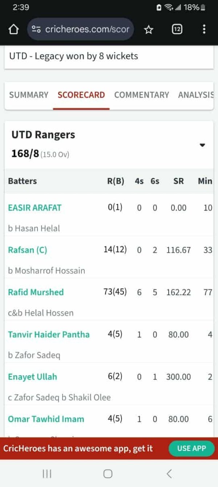
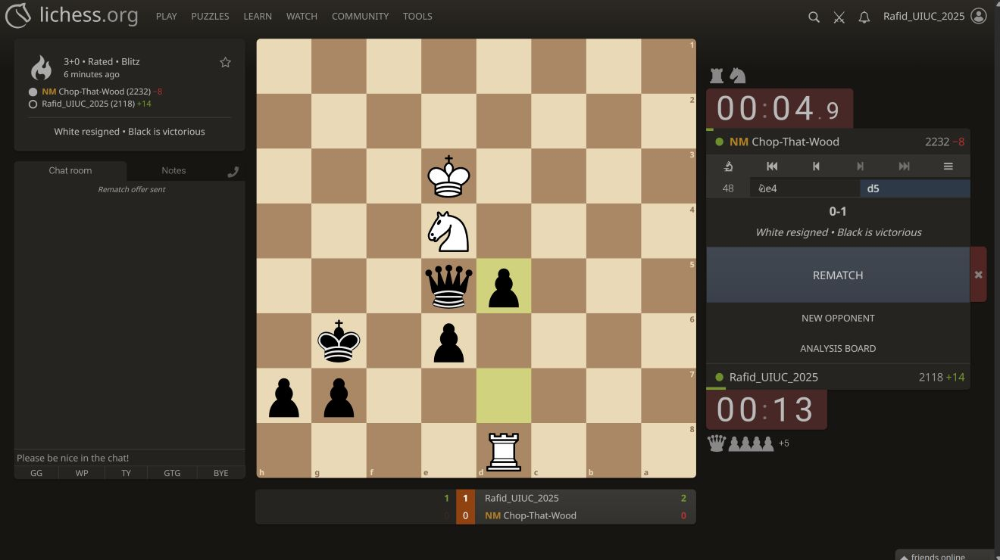

Hobbies and personal interests
Outside research, sports and chess have been long-standing interests. I enjoy both the competition and the chance to spend time with teammates and friends.
Cricket, soccer and badminton
I enjoy outdoor sports, especially cricket, soccer and badminton. Cricket has been part of my life for years: I am a left-handed opening batsman and right-arm medium pacer. I enjoy the challenge of building an innings from the first over as much as the camaraderie of playing with a team.
I also play soccer, usually on either wing. A run down the flank or a weekend badminton match is often the best way for me to switch off from research.

Chess
Chess is my main indoor hobby. I have never pursued formal chess training, but over the years I have played thousands of rapid, blitz, and bullet games and worked through many tactical puzzles. I particularly enjoy the faster formats, where calculation, pattern recognition and decision-making are tested under time pressure.
My previous online ratings reached approximately 2100 on Chess.com and 2300 on Lichess. I recorded Lichess peaks of 2257 rapid, 2353 blitz, and 2391 bullet. I have enjoyed playing over-the-board games and once managed to beat an International Master in online play.

Other interests
I enjoy following competitive sports, trying new chess openings, and spending time outdoors. I am always happy to hear about local cricket and soccer games, badminton groups, or chess meetups around Champaign–Urbana.
Get in touch if you would like to connect.